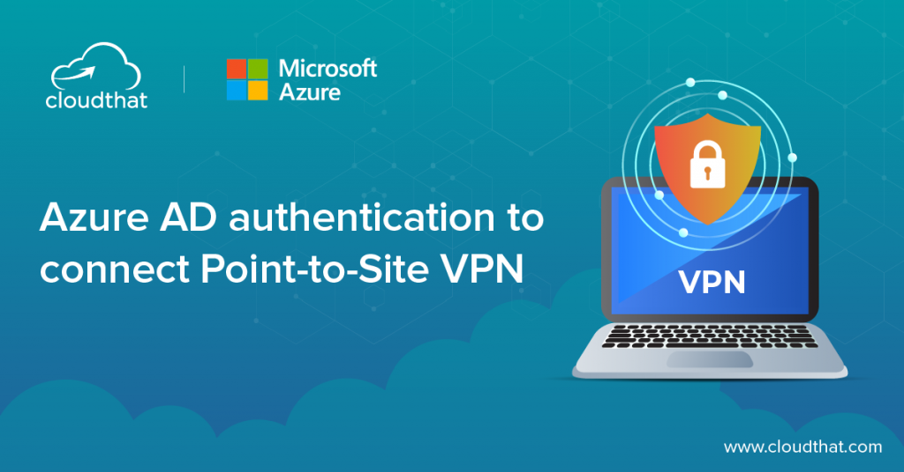

Point-to-Site VPN for Remote Admins: OpenVPN & Azure AD Auth

Point-to-Site (P2S) VPN allows individual clients to securely connect to your Azure virtual network without a site-to-site VPN connection. This is ideal for remote developers and administrators who need access to Azure resources.
What is Point-to-Site VPN?
P2S VPN creates a secure connection from a single client computer to Azure virtual networks. It's commonly used for:
- Remote work access to development environments
- Admin access to production resources
- Testing connectivity without exposing resources publicly
Authentication Methods
Azure P2S VPN supports two primary authentication methods:
Certificate-Based Authentication
Uses client certificates issued by a certificate authority. Best for organizations that already have a PKI infrastructure or need machine-level authentication.
Azure AD Authentication
Integrates with Microsoft Entra ID (formerly Azure AD) for user authentication. Provides conditional access, MFA support, and easier user management.
Prerequisites
- Azure subscription with contributor access
- Existing virtual network with a subnet for VPN gateway
- For Azure AD auth: Microsoft Entra ID tenant
- For certificate auth: OpenSSL for generating certificates
Method 1: Azure AD Authentication
Step 1: Create the Virtual Network Gateway
az network vnet create \
--resource-group myResourceGroup \
--name myVnet \
--address-prefixes 10.0.0.0/16 \
--subnet-name GatewaySubnet \
--subnet-prefixes 10.0.255.0/27
az network public-ip create \
--resource-group myResourceGroup \
--name vpnGatewayIP \
--sku Standard
az network vnet-gateway create \
--resource-group myResourceGroup \
--name vpnGateway \
--public-ip-addresses vpnGatewayIP \
--vnet myVnet \
--gateway-type Vpn \
--vpn-type RouteBased \
--sku VpnGw1 \
--client-protocol OpenVPNStep 2: Configure Azure AD Authentication
# Get your Azure AD Tenant ID
az account show --query tenantId -o tsv
# Register the VPN application in Azure AD
az ad app create \
--display-name "Azure VPN" \
--identifier-uris "https://azurevpn" \
--query appId -o tsv
# Create service principal
az ad sp create --id Step 3: Configure VPN Gateway for Azure AD
Navigate to your Virtual Network Gateway in Azure Portal:
- Go to Point-to-site configuration
- Click Configure now
- Select Authentication type: Azure Active Directory
- Enter your Azure AD tenant details:
- Tenant:
https://login.microsoftonline.com/{tenant-id} - Audience:
{app-id} - Issuer:
https://sts.windows.net/{tenant-id}
- Tenant:
- Allocate an address pool (e.g.,
172.16.0.0/24) - Save the configuration
Method 2: Certificate-Based Authentication
Step 1: Generate Root Certificate
# Generate root CA private key
openssl genrsa -out rootCA.key 4096
# Create self-signed root certificate
openssl req -x509 -new -nodes -key rootCA.key \
-sha256 -days 1024 \
-out rootCA.cer \
-subj "/CN=AzureVPNRoot"Step 2: Generate Client Certificate
# Generate client private key
openssl genrsa -out client.key 4096
# Create client certificate request
openssl req -new -key client.key \
-out client.csr \
-subj "/CN=admin-laptop"
# Sign client certificate with root CA
openssl x509 -req -in client.csr -CA rootCA.cer \
-CAkey rootCA.key -CAcreateserial \
-out client.cer -days 365 -sha256Step 3: Export Client Certificate (with private key)
# Convert to PFX format for client import
openssl pkcs12 -export -out client.pfx \
-inkey client.key -in client.cer \
-certfile rootCA.cerStep 4: Upload Root Certificate to Azure
# Get base64 content of root certificate
certutil -encode rootCA.cer rootCA_base64.cer
# Or using PowerShell
$cert = Get-Content -Path "rootCA.cer" -Encoding Byte
[Convert]::ToBase64String($cert)In Azure Portal under your VPN gateway's Point-to-site configuration:
- Select Authentication type: Certificate
- Under Root certificates, click Configure now
- Enter a name and paste the base64 certificate content
- Save the configuration
Client Setup
Windows
Download the Azure VPN Client from the Microsoft Store or Azure Portal:
- Go to your VPN gateway in Azure Portal
- Click Point-to-site configuration
- Click Download VPN client
- Extract and install the client
- Import the VPN profile (for cert auth) or sign in with Azure AD
- Connect to your virtual network
# For certificate auth, you can also manually configure OpenVPN
# Download OpenVPN client from https://openvpn.net/client-connect-vpn-for-windows/
# Import the client.pfx certificate to your Windows certificate storemacOS
# Install OpenVPN Connect from App Store or https://openvpn.net/client-connect-vpn-for-mac/
# Or use Tunnelblick (open source)
brew install --cask tunnelblickFor Azure AD auth on macOS:
- Download the Azure VPN Client for macOS from Azure Portal
- Install and import your VPN profile
- Sign in with Azure AD credentials
Linux
# Install OpenVPN on Ubuntu/Debian
sudo apt update
sudo apt install openvpn network-manager-openvpn
# Install Azure VPN Client for Linux (Ubuntu)
wget https://packages.microsoft.com/config/ubuntu/$(lsb_release -rs)/packages-microsoft-prod.deb
sudo dpkg -i packages-microsoft-prod.deb
sudo apt update
sudo apt install azure-vpn-clientFor certificate-based auth on Linux:
# Import client certificate
sudo cp client.pfx /etc/openvpn/
sudo cp rootCA.cer /etc/openvpn/
# Create OpenVPN client config
sudo nano /etc/openvpn/client.ovpn# Sample OpenVPN client config
client
dev tun
proto tcp
remote your-gateway-ip 443
resolv-retry infinite
nobind
persist-key
persist-tun
remote-cert-tls server
cipher AES-256-GCM
auth SHA256
verb 3
<ca>
# Paste rootCA.cer content here
</ca>
<cert>
# Paste client.cer content here
</cert>
<key>
# Paste client.key content here
</key>Connection Troubleshooting
Common Issues and Solutions
1. Cannot download VPN client profile
# Check gateway provisioning status
az network vnet-gateway show \
--resource-group myResourceGroup \
--name vpnGateway \
--query provisioningState2. Connection timeout or failure
- Check if port 443 (TCP) or 1194 (UDP) is open on your firewall
- Verify the gateway public IP is correct in your client config
- Ensure the VPN gateway is in "Succeeded" state
3. Azure AD authentication fails
# Verify user has VPN permission in Azure AD
# User must be in the VPN application or have directory read permissions
# Check conditional access policies
# Ensure MFA or legacy auth controls aren't blocking4. Can connect but cannot access resources
- Verify route tables allow traffic from VPN subnet
- Check NSGs on target subnets allow traffic from VPN address space
- Ensure DNS resolution works from VPN client
# Test DNS resolution
nslookup myvm.internal.cloudapp.net
# Check effective routes on VPN NIC
az network nic show-effective-route-table \
--resource-group myResourceGroup \
--name vpnGatewayNic5. Certificate expired or invalid
# Check certificate validity
openssl x509 -in client.cer -noout -dates
# Renew client certificate
# Generate new CSR and sign with root CA
openssl req -new -key client.key -out clientrenewal.csr \
-subj "/CN=admin-laptop"
openssl x509 -req -in clientrenewal.csr -CA rootCA.cer \
-CAkey rootCA.key -CAcreateserial \
-out clientrenewal.cer -days 365 -sha256Testing Your Connection
# After connecting, verify your IP address
ipconfig # Windows
ip addr # Linux/macOS
# You should see an IP from your VPN address pool
# Test connectivity to Azure resources
ping 10.0.0.4 # Replace with your VM private IP
# Test DNS resolution
nslookup mydatabase.internal.cloudapp.netSecurity Best Practices
- Use Azure AD authentication with MFA for stronger security
- Implement conditional access policies for VPN access
- Use certificate-based auth with short expiration periods
- Restrict VPN access to specific user groups in Azure AD
- Monitor connection logs for suspicious activity
- Use separate address pools for different environments (dev/staging/prod)
- Enable VPN gateway diagnostics logs
Frequently Asked Questions
How many concurrent P2S connections does Azure support?
It varies by SKU: Basic supports 128 connections, VpnGw1 supports 250, VpnGw2 supports 500, and VpnGw3 supports 1000.
Can I use P2S and S2S VPN simultaneously?
Yes, you can have both connection types on the same VPN gateway. This is useful for hybrid scenarios.
What's the difference between OpenVPN and SSTP?
OpenVPN works on all platforms and can traverse most firewalls. SSTP uses port 443 and works well in restrictive network environments but is Windows-only.
Does P2S VPN support split tunneling?
Yes, by default all traffic routes through the VPN. You can configure split tunneling to only route specific traffic through the tunnel.